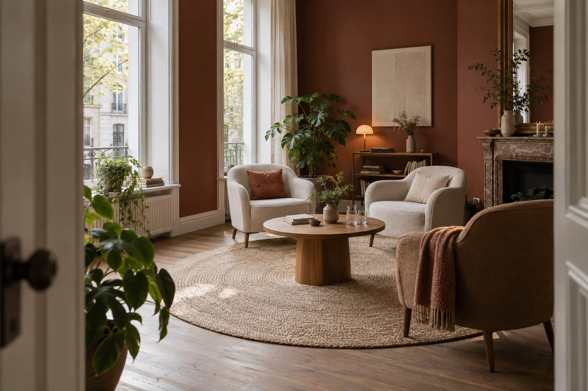

Groepspraktijk in Beveren-Roeselare
Een plek voor warme zorg, verbinding en zingeving.
Sensie is een groepspraktijk waar therapie, coaching, ontmoeting en persoonlijke ontwikkeling samenkomen. Je bent welkom wanneer je vastloopt, met vragen zit of voelt dat je iets wilt veranderen of beter begrijpen.

Een plek om even te mogen zijn.SfeerbeeldWat ons verbindt
Wat geeft jouw leven betekenis?
Waar krijg je energie van? Wat geeft je richting, verbinding en voldoening? Soms zijn dat grote levensvragen. Soms raken we het contact ermee kwijt door wat er op ons pad komt.
Bij Sensie is zingeving de rode draad. We kijken naar jou als mens, met je hele verhaal, en maken ruimte voor kwetsbaarheid én kracht.
Ons aanbod
Ondersteuning die bij je past
Een gesprek, een andere blik, of de kracht van samenkomen. Er zijn verschillende manieren om weer ruimte te voelen.
Individuele begeleiding
Voor vastlopen, rouw en verlies, identiteitsvragen, hoogsensitiviteit, hoogbegaafdheid en persoonlijke groei.
Meer over begeleiding 02Relaties & seksualiteit
Een veilige plek voor vragen over verbinding, relatiepatronen, intimiteit en seksualiteit. Alleen of samen.
Ontdek de mogelijkheden 03Groepen & ontmoeting
Familieopstellingen, deelcirkels en andere momenten om samen te delen, ontdekken en ervaren.
Bekijk het groepsaanbodOok benieuwd naar hypnotherapie?
Zorg hoeft niet altijd te betekenen dat je tegenover iemand in een stoel zit en vertelt wat er moeilijk gaat. Soms helpt een gesprek. Soms het samenbrengen van mensen. Soms gewoon een plek waar je even mag zijn.
Voor wie
Je hoeft geen duidelijke hulpvraag te hebben.
Misschien loop je vast in jezelf, op je werk of in relaties. Misschien draag je een verlies mee, zoek je naar wie je bent of verlang je naar meer diepgang.
Ook als je nog niet precies weet wat er knelt, ben je welkom. We staan samen stil bij wat er is en ontdekken wat voor jou belangrijk is.
Lees hoe we je begeleidenWelkom bij Sensie
We lopen graag een stukje met je mee.
Je hoeft je vraag nog niet precies te kunnen verwoorden. Samen kijken we wat er speelt en wat je nodig hebt.